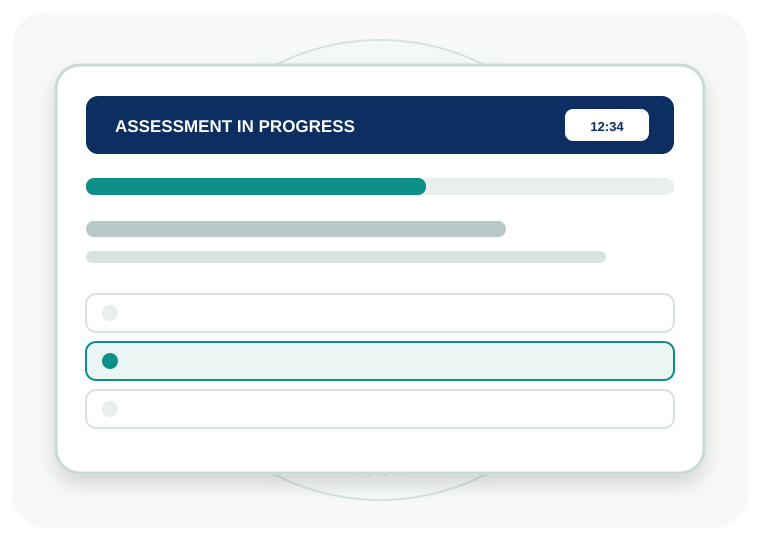

CANDIDATE ASSESSMENT PORTAL
My examination
Checking your secure session…
EXAM DURATION47 min100 MCQs · five subject blocks

Your assigned slot controls accessSign in with your candidate account. Your stream, slot and opening window are checked before the examination can begin.
Preparing your assessment
Five subject blocks · 100 MCQs · approximately 47 minutes · +1 / −0.25 / 0 marking.